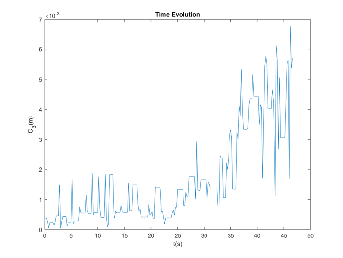

All the code used to generate the images and video have been pusblished to Github.
Self Assembly
Put a number of identical hard regular-shaped particles in a flat layer on top of a vibrating plate. Depending on the number of particles per unit area, they may or may not form an ordered crystal-like structure. 1
See the notes on Reference
Binary Image Time-lapse Evolution
Reciprocal Lattice
Apply fft2 2D Fourier transformation. It can be
visualized how the long-range periodicity is established over time.
Original video, particle recognition & tracing result, and superposition mask.
original
After particle recognition & tracing
superposition
It's delightful to watch the particles leaving a trace on the plate:
Polygon Vortex
A stationary cylindrical vessel containing a rotating plate near the bottom surface is partially filled with liquid. Under certain conditions, the shape of the liquid surface becomes polygonlike.2
Watch background Video

Extract the outline of the vortex, then calculate the Fourier coefficients of it with the given formula
\[ c_{n}=\frac{1}{2 \pi} \int_{0}^{2 \pi} r(\theta) e^{i n \theta} d \theta \]
The Fourier coefficient \(c_3\) increases over time, indicating a strengthening of of threefold symmetry. i.e., the shape of the vortex is becoming closer to a triangle (or triangular star)
